- 00 学习指南 如何学习这门编译原理实战课？.md.html
- 00 开篇词 在真实世界的编译器中游历.md.html
- 01 编译的全过程都悄悄做了哪些事情？.md.html
- 02 词法分析：用两种方式构造有限自动机.md.html
- 03 语法分析：两个基本功和两种算法思路.md.html
- 04 语义分析：让程序符合语义规则.md.html
- 05 运行时机制：程序如何运行，你有发言权.md.html
- 06 中间代码：不是只有一副面孔.md.html
- 07 代码优化：跟编译器做朋友，让你的代码飞起来.md.html
- 08 代码生成：如何实现机器相关的优化？.md.html
- 09 Java编译器（一）：手写的编译器有什么优势？.md.html
- 10 Java编译器（二）：语法分析之后，还要做些什么？.md.html
- 11 Java编译器（三）：属性分析和数据流分析.md.html
- 12 Java编译器（四）：去除语法糖和生成字节码.md.html
- 13 Java JIT编译器（一）：动手修改Graal编译器.md.html
- 14 Java JIT编译器（二）：Sea of Nodes为何如此强大？.md.html
- 15 Java JIT编译器（三）：探究内联和逃逸分析的算法原理.md.html
- 16 Java JIT编译器（四）：Graal的后端是如何工作的？.md.html
- 17 Python编译器（一）：如何用工具生成编译器？.md.html
- 18 Python编译器（二）：从AST到字节码.md.html
- 19 Python编译器（三）：运行时机制.md.html
- 20 JavaScript编译器（一）：V8的解析和编译过程.md.html
- 21 JavaScript编译器（二）：V8的解释器和优化编译器.md.html
- 22 Julia编译器（一）：如何让动态语言性能很高？.md.html
- 23 Julia编译器（二）：如何利用LLVM的优化和后端功能？.md.html
- 24 Go语言编译器：把它当作教科书吧.md.html
- 25 MySQL编译器（一）：解析一条SQL语句的执行过程.md.html
- 26 MySQL编译器（二）：编译技术如何帮你提升数据库性能？.md.html
- 27 课前导读：学习现代语言设计的正确姿势.md.html
- 28 前端总结：语言设计也有人机工程学.md.html
- 29 中端总结：不遗余力地进行代码优化.md.html
- 30 后端总结：充分发挥硬件的能力.md.html
- 31 运行时（一）：从0到语言级的虚拟化.md.html
- 32 运行时（二）：垃圾收集与语言的特性有关吗？.md.html
- 33 并发中的编译技术（一）：如何从语言层面支持线程？.md.html
- 34 并发中的编译技术（二）：如何从语言层面支持协程？.md.html
- 35 并发中的编译技术（三）：Erlang语言厉害在哪里？.md.html
- 36 高级特性（一）：揭秘元编程的实现机制.md.html
- 37 高级特性（二）：揭秘泛型编程的实现机制.md.html
- 38 综合实现（一）：如何实现面向对象编程？.md.html
- 39 综合实现（二）：如何实现函数式编程？.md.html
- 40 成果检验：方舟编译器的优势在哪里？.md.html
- 不定期加餐1 远程办公，需要你我具备什么样的素质？.md.html
- 不定期加餐2 学习技术的过程，其实是训练心理素质的过程.md.html
- 不定期加餐3 这几年，打动我的两本好书.md.html
- 不定期加餐4 从身边的牛人身上，我学到的一些优秀品质.md.html
- 不定期加餐5 借助实例，探究C++编译器的内部机制.md.html
- 划重点 7种编译器的核心概念与算法.md.html
- 期末答疑与总结 再次审视学习编译原理的作用.md.html
- 热点问题答疑 如何吃透7种真实的编译器？.md.html
- 用户故事 易昊：程序员不止有Bug和加班，还有诗和远方.md.html
- 知识地图 一起来复习编译技术核心概念与算法.md.html
- 结束语 实战是唯一标准！.md.html
- 捐赠
33 并发中的编译技术（一）：如何从语言层面支持线程？
你好，我是宫文学。
现代的编程语言，开始越来越多地采用并发计算的模式。这也对语言的设计和编译技术提出了要求，需要能够更方便地利用计算机的多核处理能力。
并发计算需求的增长跟两个趋势有关：一是，CPU在制程上的挑战越来越大，逼近物理极限，主频提升也越来越慢，计算能力的提升主要靠核数的增加，比如现在的手机，核数越来越多，动不动就8核、12核，用于服务器的CPU核数则更多；二是，现代应用对并发处理的需求越来越高，云计算、人工智能、大数据和5G都会吃掉大量的计算量。
因此，在现代语言中，友好的并发处理能力是一项重要特性，也就需要编译技术进行相应的配合。现代计算机语言采用了多种并发技术，包括线程、协程、Actor模式等。我会用三讲来带你了解它们，从而理解编译技术要如何与这些并发计算模式相配合。
这一讲，我们重点探讨线程模式，它是现代计算机语言中支持并发的基础模式。它也是讨论协程和Actor等其他话题的基础。
不过在此之前，我们需要先了解一下并发计算的一点底层机制：并行与并发、进程和线程。
并发的底层机制：并行与并发、进程与线程
我们先来学习一下硬件层面对并行计算的支持。
假设你的计算机有两颗CPU，每颗CPU有两个内核，那么在同一时间，至少可以有4个程序同时运行。
后来CPU厂商又发明了超线程（Hyper Threading）技术，让一个内核可以同时执行两个线程，增加对CPU内部功能单元的利用率，这有点像我们之前讲过的流水线技术。这样一来，在操作系统里就可以虚拟出8个内核（或者叫做操作系统线程），在同一时间可以有8个程序同时运行。这种真正的同时运行，我们叫做并行（parallelism）。
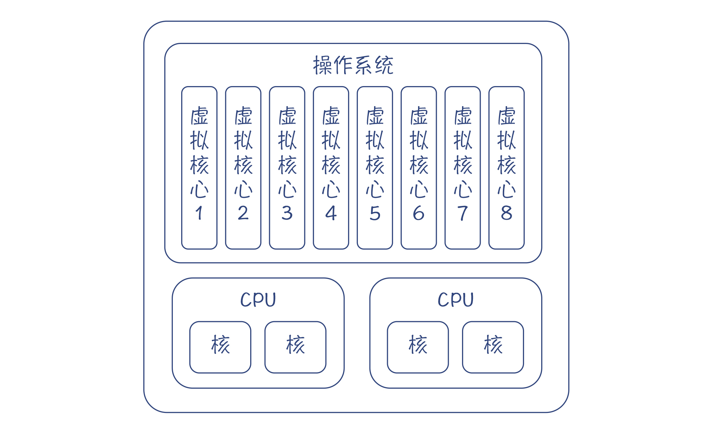
图1：虚拟内核与CPU真实内核的对应关系
可是仅仅8路并行，也不够用呀。如果你去查看一下自己电脑里的进程数，会发现运行着几十个进程，而线程数就更多了。
所以，操作系统会用分时技术，让一个程序执行一段时间，停下来，再让另一个程序运行。由于时间片切得很短，对于每一个程序来说，感觉上似乎一直在运行。这种“同时”能处理多个任务，但实际上并不一定是真正同时执行的，就叫做并发（Concurrency）。
实际上，哪怕我们的计算机只有一个内核，我们也可以实现多个任务的并发执行。这通常是由操作系统的一个调度程序（Scheduler）来实现的。但是有一点，操作系统在调度多个任务的时候，是有一定开销的：
- 一开始是以进程为单位来做调度，开销比较大。
- 在切换进程的时候，要保存当前进程的上下文，加载下一个进程的上下文，也会有一定的开销。由于进程是一个比较大的单位，其上下文的信息也比较多，包括用户级上下文（程序代码、静态数据、用户堆栈等）、寄存器上下文（各种寄存器的值）和系统级上下文（操作系统中与该进程有关的信息，包括进程控制块、内存管理信息、内核栈等）。
相比于进程，线程技术就要轻量级一些。在一个进程内部，可以有多个线程，每个线程都共享进程的资源，包括内存资源（代码、静态数据、堆）、操作系统资源（如文件描述符、网络连接等）和安全属性（用户ID等），但拥有自己的栈和寄存器资源。这样一来，线程的上下文包含的信息比较少，所以切换起来开销就比较小，可以把宝贵的CPU时间用于执行用户的任务。
总结起来，线程是操作系统做并发调度的基本单位，并且可以跟同一个进程内的其他线程共享内存等资源。操作系统会让一个线程运行一段时间，然后把它停下来，把它所使用的寄存器保存起来，接着让另一个线程运行，这就是线程调度原理。你要在大脑里记下这个场景，这样对理解后面所探讨的所有并发技术都很有帮助。
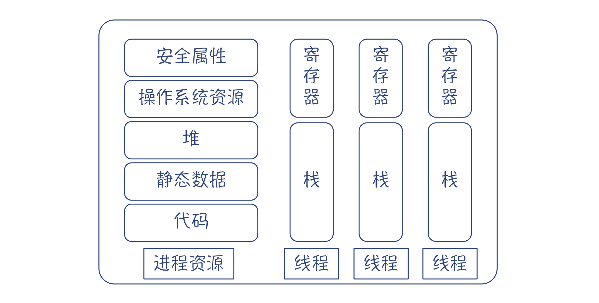
图2：进程的共享资源和线程私有的资源
我们通常把进程作为资源分配的基本单元，而把线程作为并发执行的基本单元。不过，有的时候，用进程作为并发的单元也是比较好的，比如谷歌浏览器每打开一个Tab页，就新启动一个进程。这是因为，浏览器中多个进程之间不需要有互动。并且，由于各个进程所使用的资源是独立的，所以一个进程崩溃也不会影响到另一个。
而如果采用线程模型的话，由于它比较轻量级，消耗的资源比较少，所以你可以在一个操作系统上启动几千个线程，这样就能执行更多的并发任务。所以，在一般的网络编程模型中，我们可以针对每个网络连接，都启动一条线程来处理该网络连接上的请求。在第二个模块中我们分析过的MySQL就是这样做的。你每次跟MySQL建立连接，它就会启动一条线程来响应你的查询请求。
采用线程模型的话，程序就可以在不同线程之间共享数据。比如，在数据库系统中，如果一个客户端提交了一条SQL，那么这个SQL的编译结果可以被缓存起来。如果另一个用户恰好也执行了同一个SQL，那么就可以不用再编译一遍，因为两条线程可以访问共享的内存。
但是共享内存也会带来一些问题。当多个线程访问同样的数据的时候，会出现数据处理的错误。如果使用并发程序会造成错误，那当然不是我们所希望的。所以，我们就要采用一定的技术去消除这些错误。
Java语言内置的并发模型就是线程模型，并且在语法层面为线程模型提供了一些原生的支持。所以接下来，我们先借助Java语言去了解一下，如何用编译技术来配合线程模型。
Java的并发机制
Java从语言层面上对并发编程提供了支持，简化了程序的开发。
Java对操作系统的线程进行了封装，程序员使用Thread类或者让一个类实现Runnable接口，就可以作为一个线程运行。Thread类提供了一些方法，能够控制线程的运行，并能够在多个线程之间协作。
从语法角度，与并发有关的关键字有synchronized和volatile。它们就是用于解决多个线程访问共享内存的难题。
synchronized关键字：保证操作的原子性
我们通过一个例子，来看看多个线程访问共享数据的时候，为什么会导致数据错误。
public class TestThread {
public static void main(String[] args) {
Num num = new Num();
for (int i = 0; i < 3; i++) {
new NewThread(num).start();
}
}
}
//线程类NewThread 对数字进行操作
class NewThread extends Thread {
private Num num;
public NewThread(Num num) {
this.num = num;
}
@Override
public void run() {
for (int i = 0; i < 1000; i++)
num.add();
System.out.println("num.num:" + num.value);
}
}
//给数字加1
class Num {
public int value = 0;
public void add() {
value += 1;
}
}
在这个例子中，每个线程对Num中的value加1000次。按说总有一个线程最后结束，这个时候打印出来的次数是3000次。可实际运行的时候，却发现很难对上这个数字，通常都要小几百。下面是几次运行的结果：
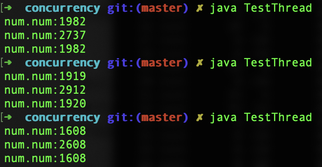
要找到其中的原因，最直接的方法，是从add函数的字节码入手研究。学习过编译原理之后，你要养成直接看字节码、汇编码来研究底层机制的习惯，这样往往会对问题的研究更加透彻。add函数的字节码如下：
0: aload_0 #加载Num对象
1: dup #复制栈顶对象(Num)
2: getfield #弹出一个Num对象，从内存取出value的值，加载到栈
5: iconst_1 #加载整数1到栈
6: iadd #执行加法，结果放到栈中
7: putfield #栈帧弹出加法的结果和Num对象，写字段值，即把value的值写回内存
10: return
看着这一段字节码，你是不是会重新回忆起加法的计算过程？它实际上是4个步骤：
- 从内存加载value的值到栈；
- 把1加载到栈；
- 从栈里弹出value的值和1，并做加法；
- 把新的value的值存回到内存里。
这是一个线程执行的过程。如果是两个以上的线程呢？你就会发现有问题了。线程1刚执行getfield取回value的值，线程2也做了同样的操作，那么它们取到的值是同一个。做完加法以后，写回内存的时候，写的也是同一个值，都是3。
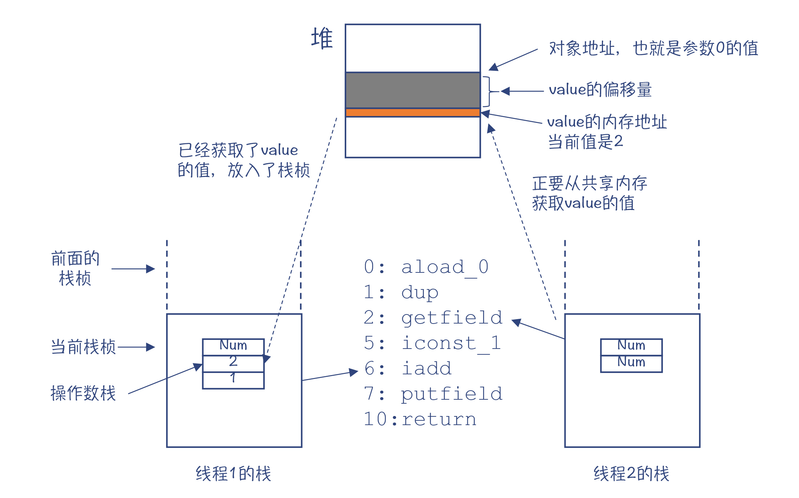
图3：多个线程访问共享内存的情况
这样一分析，你就能理解数字计算错误的原因了。总结起来，出现这种现象是因为对value的加法操作不符合原子性（Atomic）。原子性的意思是一个操作或者多个操作，要么全部执行，并且执行的过程不会被任何因素打断，要么就都不执行。如果对value加1是一个原子操作，那么线程1一下子就操作完了，value的值从2一下子变成3。线程2只能接着对3再加1，无法在线程1执行到一半的时候，就已经介入。
解决办法就是，让这段代码每次只允许一个线程执行，不会出现多个线程交叉执行的情况，从而保证对value值修改的原子性。这个时候就可以用到synchronized关键字了：
public void add() {
synchronized(this){
value += 1;
}
}
这样再运行示例程序，就会发现，总有一个线程打印出来的值是3000。这证明确实一共对value做了3000次加1的运算。
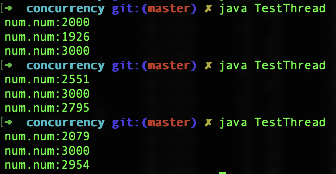
那synchronized关键字作用的原理是什么呢？要回答这个问题，我们还是要研究一下add()方法的字节码。
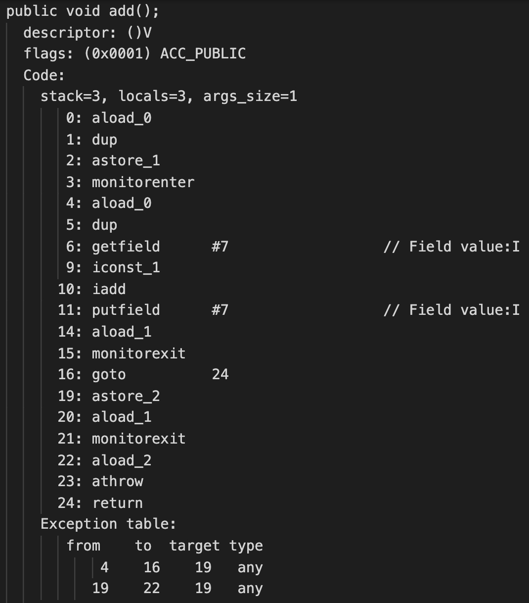
在字节码中，你会发现两个特殊的指令：monitorenter和monitorexit指令，就是它们实现了并发控制。
查看字节码的描述，我们可以发现monitorenter的作用，是试图获取某个对象引用的监视器（monitor）的所有权。什么是监视器呢？在其他文献中，你可能会读到“锁”的概念。监视器和锁其实是一个意思。这个锁是关联到一个Num对象的，也就是代码中的this变量。只有获取了这把锁的程序，才能执行块中的代码，也就是“value += 1”。
具体来说，当程序执行到monitorenter的时候，会产生下面的情况：
- 如果监视器的进入计数是0，线程就会进入监视器，并将进入计数修改为1。这个时候，该线程就拥有了该监视器。
- 如果该线程已经拥有了该监视器，那么就重新进入，并将进入计数加1。
- 如果其他线程拥有该监视器，那么该线程就会被阻塞（block）住，直到监视器的进入计数变为0，然后再重新试图获取拥有权。
monitorexit指令的机制则比较简单，就是把进入计数减1。如果一段程序被当前线程进入了多次，那么也会退出同样的次数，直到进入计数为0。
总结起来，我们用了锁的机制，保证被保护的代码块在同一时刻只能被一个线程访问，从而保证了相关操作的原子性。
到这里了，你可能会继续追问：如何保证获取锁的操作是原子性的？如果某线程看到监视器的进入计数是0，这个时候它就进去，但在它修改进入计数之前，如果另一个线程也进去了怎么办，也修改成1怎么办？这样两个线程会不会都认为自己获得了锁？
这个担心是非常有必要的。实际上，要实现原子操作，仅仅从软件角度做工作是不行的，还必须要有底层硬件的支持。具体是如何支持的呢？我们还是采用一贯的方法，直接看汇编代码。
你可以用第13讲学过的方法，获取Num.add()方法对应的汇编代码，看看在汇编层面，监视器是如何实现的。我截取了一段汇编代码，并标注了其中的一些关键步骤，你可以看看。
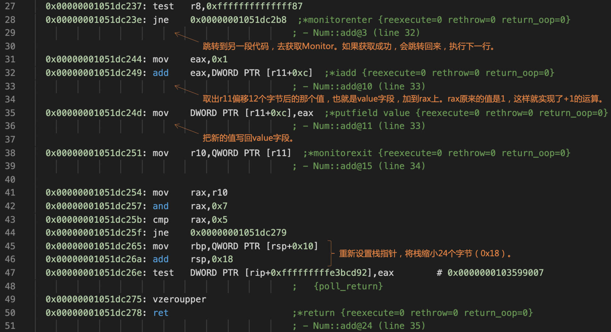
汇编代码首先会跳到一段代码去获取监视器。如果获取成功，那么就跳转回来，执行后面对value做加法的运算。
我们再继续看一下获取监视器的汇编代码：
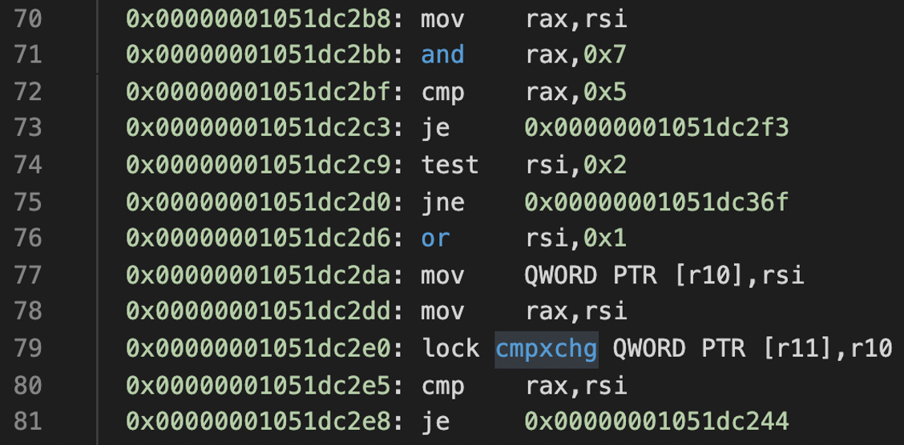
你特别需要注意的是cmpxchg指令：它能够通过一条指令，完成比较和交换的操作。查看Intel的手册，你会发现更详细的解释：把rax寄存器的值与cmpxchg的目的操作数的值做对比。如果两个值相等，那么就把源操作数的值设置到目的操作数；否则，就把目的操作数的值设置到rax寄存器。
那cmpxchg指令有什么用呢？原来，通过这样一条指令，计算机就能支持原子操作。
比如，监视器的计数器的值，一开始是0。我想让它的值加1，从而获取这个监视器。首先，我根据r11寄存器中保存的地址，从内存中读出监视器初始的计数，发现它是0；接着，我就把这个初始值放入rax；第三步，我把新的值，也就是1放入r10寄存器。最后，我执行cmpxchg指令：
cmpxchg QWORD PTR [r11],r10
这个指令把当前的监视器计数，也就是内存地址是r11的值，跟rax的值做比较。如果它俩相等，仍然是0，那就意味着没有别的程序去修改监视器计数。这个时候，该指令就会把r10的值设置到监视器计数中，也就是修改为1。如果有别的程序已经修改了计数器的值，那么就会把计数器现在的值写到rax中。
补充：实际执行的时候，r10中的值并不是简单的0和1，而是获取了Java对象的对象头，并设置了其中与锁有关的标志位。
所以，通过cmpxchg指令，要么获得监视器成功，要么失败，肯定不会出现两个程序都以为自己获得了监视器的情况。
正因为cmpxchg在硬件级把原来的两个指令（比较指令和交换指令，Compare and Swap）合并成了一个指令，才能同时完成两个操作：首先看看当前值有没有被改动，然后设置正确的值。这也是Java语言中与锁有关的API得以运行的底层原理，也是操作系统和数据库系统加锁的原理。
不过，在汇编代码中，我们看到cmpxchg指令前面还有一个lock的前缀。这是起什么作用的呢？
原来呀，cmpxchg指令在一个内核中执行的时候，可以保证原子性。但是，如果两个内核同时执行这条指令，也可能再次发生两个内核都去写入，从而都认为自己写成功了的情况。lock前缀的作用，就是让这条指令在同一时间，只能有一个内核去执行。
所以说，要从根本上保证原子性，真不是一件容易的事情。不过，不管怎么说，通过CPU的支持，我们确实能够实现原子操作了，能让一段代码在同一个时间只让一个线程执行，从而避免了多线程的竞争现象。
上面说的synchronized关键字，是采用了锁的机制，保证被保护的代码块在同一时刻只能被一个线程访问，从而保证了相关操作的原子性。Java还有另一个与并发有关的关键字，就是volatile。
volatile关键字：解决变量的可见性问题
那volatile关键字是针对什么问题的呢？我先来告诉你答案，它解决的是变量的可见性（Visibility）。
你可以先回想一下自己是不是遇到过这个问题：在并发计算的时候，如果两个线程都需要访问同一个变量，其中线程1修改了变量的值，那在多个CPU的情况下，线程2有的时候就会读不到最新的值。为什么呢？
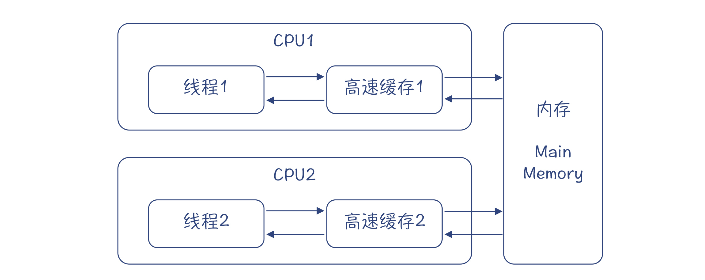
图4：不同线程使用不同的高速缓存的情形
因为CPU里都有高速缓存，用来提高CPU访问内存数据的速度。当线程1写一个值的时候，它不一定会马上被写回到内存，这要根据高速缓存的写策略来决定（这有点像你写一个文件到磁盘上，其实不会即时写进去，而是会先保存到缓冲区，然后批量写到磁盘，这样整体效率是最高的）。同样，当线程2读取这个值的时候，它可能是从高速缓存读取的，而没有从内存刷新数据，所以读到的可能是个旧数据，即使内存中的数据已经更新了。
volatile关键字就是来解决这个问题的。它会告诉编译器：有多个线程可能会修改这个变量，所以当某个线程写数据的时候，要写回到内存，而不仅仅是写到高速缓存；当读数据的时候，要从内存中读，而不能从高速缓存读。
在下面的示例程序中，两个线程共享了同一个Num对象，其中线程2会去修改Num.value的值，而线程1会读取Num.value的值。
public class TestVolatile {
public static void main(String[] args) {
new TestVolatile().doTest();
}
public void doTest(){
Num num = new Num();
new MyThread1(num).start();
new MyThread2(num).start();
}
//线程1:读取Num.value的值。如果该值发生了变化，那么就打印出来。
class MyThread1 extends Thread {
private Num num;
public MyThread1(Num num) {
this.num = num;
}
@Override
public void run() {
int localValue = num.value;
while (localValue < 10){
if (localValue != num.value){ //发现num.value变了
System.out.println("Value changed to: " + num.value);
localValue = num.value;
}
}
}
}
//线程2：修改Num.value的值。
class MyThread2 extends Thread {
private Num num;
public MyThread2(Num num) {
this.num = num;
}
@Override
public void run() {
int localValue = num.value;
while(num.value < 10){
localValue ++;
System.out.println("Change value to: " + localValue);
num.value = localValue;
try {
Thread.sleep(500);
} catch (InterruptedException e) {
e.printStackTrace();
}
}
}
}
class Num {
public volatile int value = 0; //用volatile关键字修饰value
}
}
如果value字段的前面没有volatile关键字，那么线程1经常不能及时读到value的变化：
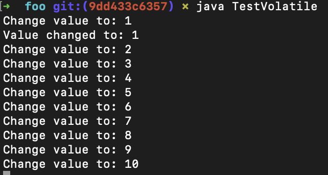
而如果加了volatile关键字，那么每次value的变化都会马上被线程1检测到：
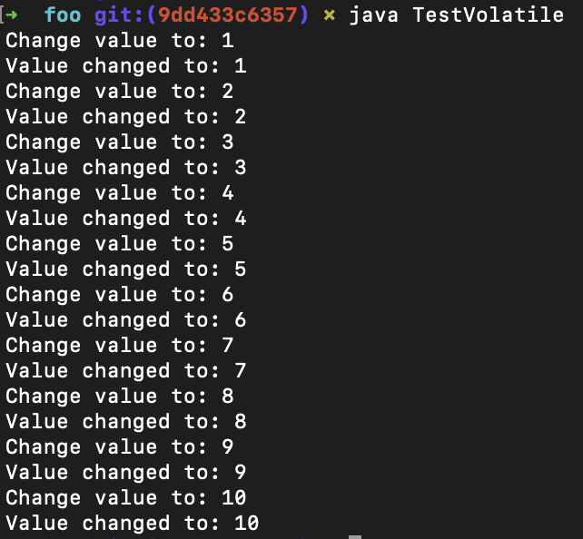
通过这样一个简单的例子，你能更加直观地理解为什么可见性是一个重要的问题，并且能够看到volatile关键字的效果。所以，volatile关键字的作用，是让程序在访问被修饰的变量的内存时，让其他处理器能够见到该变量最新的值。那这是怎么实现的呢？
原来这里用到了一种叫做内存屏障（Memory Barriers）的技术。简单地说，编译器要在涉及volatile变量读写的时候，执行一些特殊的指令，让其他处理器获得该变量最新的值，而不是自己的一份拷贝（比如在高速缓存中）。
根据内存访问顺序的不同，这些内存屏障可以分为四种，分别是LoadLoad屏障、StoreStore屏障、LoadStore屏障和StoreLoad屏障。以LoadLoad屏障为例，它的指令序列是：
Load1指令
LoadLoad屏障
Load2指令
在这种情况下，LoadLoad屏障会确保Load1的数据在Load2和后续Load指令之前，被真实地加载。
我们看一个例子。在下面的示例程序中，列出了用到Load1指令和Load2指令的场景。这个时候，编译器就要在这两条指令之间插入一个LoadLoad屏障：
class Foo{
volatile int a;
int b, c;
void foo(){
int i, j;
i = a; // Load1指令,针对volatile变量
j = b; // Load2指令，针对普通变量
}
}
关于另几种内存屏障的说明，以及在什么时候需要插入内存屏障指令，你可以看下这篇文章。
另外，不同的CPU，对于这四类屏障所对应的指令是不同的。下图也是从上面那篇文章里摘出来的：
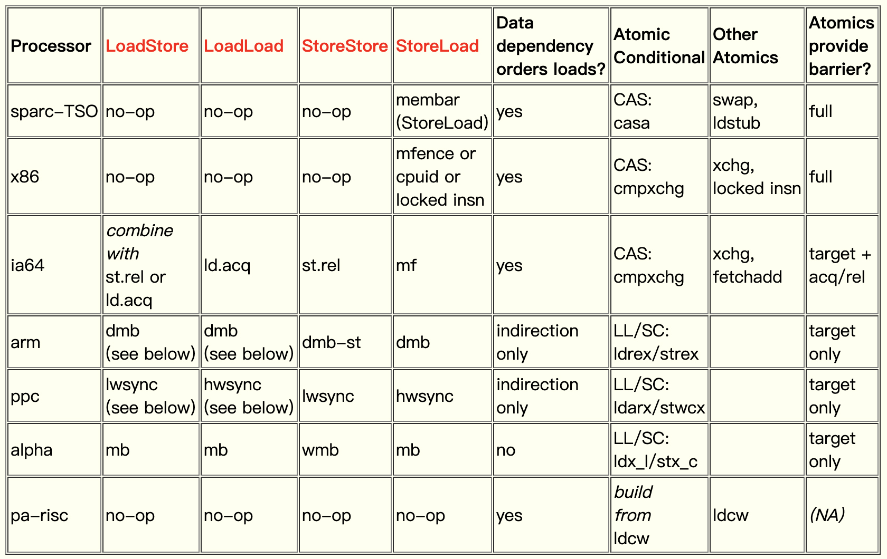
可以看到，对于x86芯片，其中的LoadStore、LoadLoad和StoreStore屏障，都用一个no-op指令，等待前一个指令执行完毕即可。这就能确保读到正确的值。唯独对于StoreLoad的情况，也就是我们TestVolatile示例程序中一个线程写、另一个线程读的情况，需要用到几个特殊的指令之一，比如mfence指令、cpuid指令，或者在一个指令前面加锁（lock前缀）。
总结起来，其实synchronized关键字也好，volatile关键字也好，都是用来保证线程之间的同步的。只不过，synchronized能够保证操作的原子性，但付出的性能代价更高；而volatile则只同步数据的可见性，付出的性能代价会低一点。
在Java语言规范中，在多线程情况下与共享变量访问有关的内容，被叫做Java的内存模型，并单独占了一节。这里面规定了在对内存（包括类的字段、数组中的元素）做操作的时候，哪些顺序是必须得到保证的，否则程序就会出错。
这些规定跟编译器的实现，有比较大的关系。编译器在做优化的时候，会对指令做重排序。在重排序的时候，一定要遵守Java内存模型中对执行顺序的规定，否则运行结果就会出错。
课程小结
今天这一讲，我主要以Java语言为例，讲解了多线程的原理，以及相关的程序语义。多个线程如果要访问共享的数据，通常需要进行同步。synchronized关键字能通过锁的机制，保证操作的原子性。而volatile关键字则能通过内存屏障机制，在不同的处理器之间同步共享变量的值。
你会发现，在写编译器的时候，只有正确地理解了这些语义和原理，才能生成正确的目标代码，所以这一讲的内容你必须要理解。学会今天这讲，还有一个作用，就是能够帮助你加深对多线程编程的底层机制的理解，更好地编写这方面的程序。
其他语言在实现多线程机制时，所使用的语法可能不同，但底层机制都是相同的。通过今天的讲解，你可以举一反三。
我把今天这讲思维导图也整理出来了，供你参考：
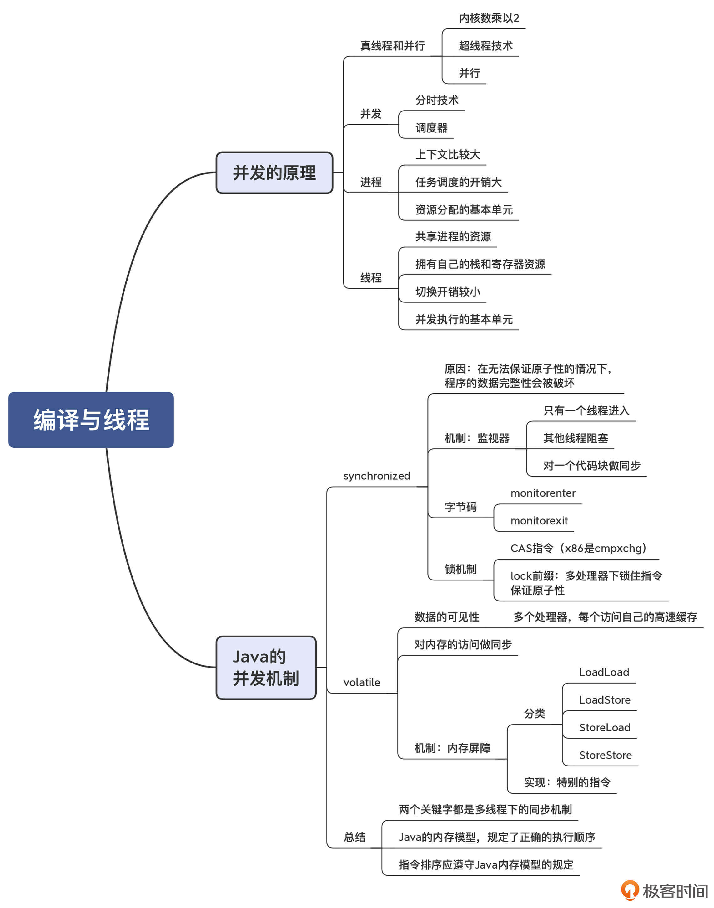
一课一思
在你之前的项目经验中，有没有遇到并发处理不当而导致的问题？你是怎么解决的呢？欢迎分享你的经验。
参考资料
- The JSR-133 Cookbook for Compiler Writers，介绍了编译器如何为Java语言实现内存屏障。
- Java语言规范中对内存模型的相关规定。
© 2019 - 2023 Liangliang Lee. Powered by gin and hexo-theme-book.